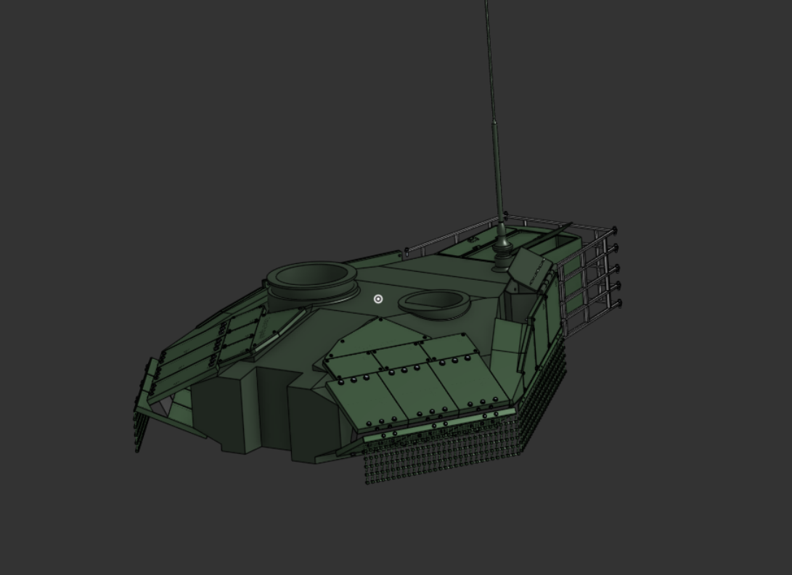
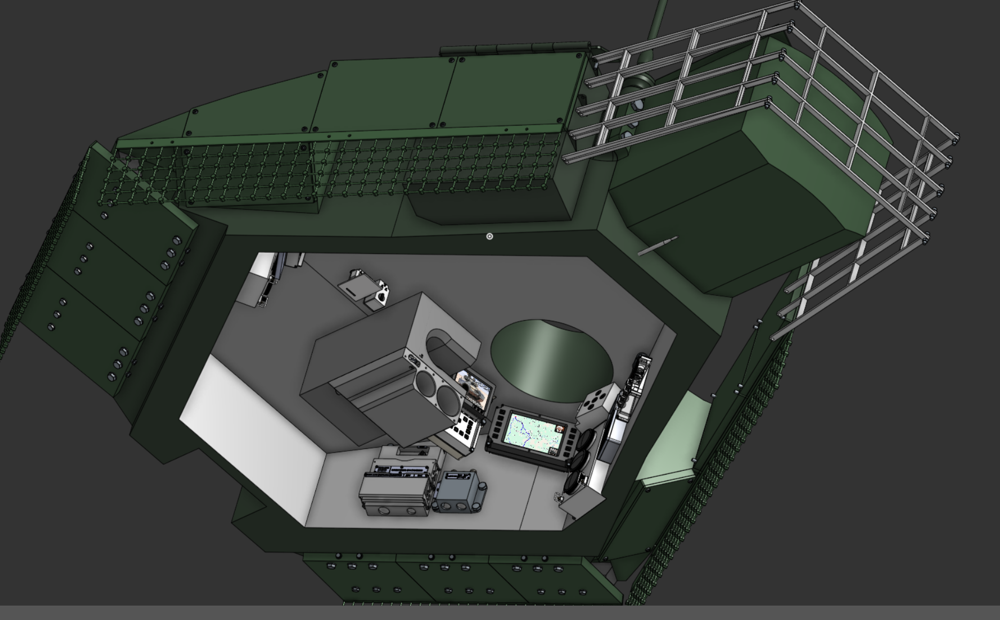

The Apex Predator of Armored Warfare
Turret geometry · Fire-control · V‑92S2F propulsion
The TTM T‑90M stands as the definitive main battle tank for high‑intensity conflict, engineered to absorb punishment and deliver devastating firepower. Lead Engineer Yoni Shapiro redesigned the turret geometry and fire‑control interfaces to ensure first‑look, first‑kill dominance against opposing armor.
The beating heart of the T‑90M is the enhanced V‑92S2F powerplant, a heavy diesel engine developed under the direction of Lead Propulsion Engineer Micah Feiglin. Optimized for extreme torque and thermal efficiency, it keeps this 48‑ton platform agile across the mud and ruin of the modern battlefield.
Back to all projects